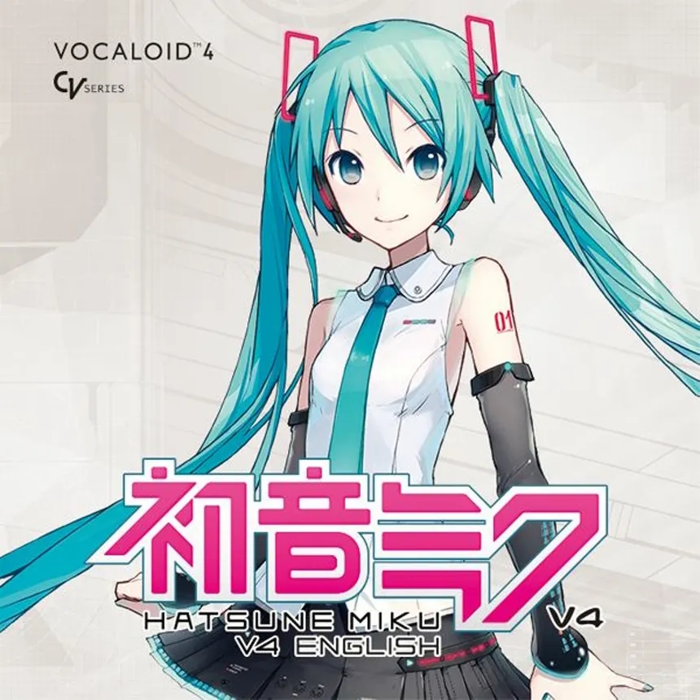
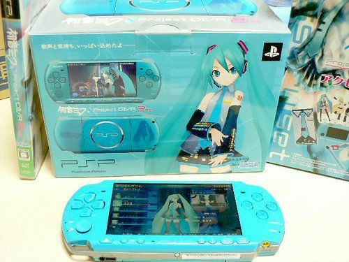

☆ ¿Qué es VOCALOID?
VOCALOID es una tecnología de síntesis de voz cantada desarrollada por Yamaha. El usuario introduce melodía y letra, y el programa genera una interpretación a partir de un banco de voz.

☆ Hatsune Miku

Hatsune Miku (初音ミク) es un banco de voz desarrollado y distribuido por Crypton Future Media. Fue lanzado el 31 de agosto de 2007 para VOCALOID2.
La voz se creó a partir de muestras de la actriz japonesa Saki Fujita. Crypton también desarrolló una identidad visual para el producto; el diseño de Miku estuvo a cargo del ilustrador KEI.
☆ Datos
Saki Fujita proporcionó las muestras vocales utilizadas para el banco de voz.
| Nombre | 初音ミク / Hatsune Miku |
|---|---|
| Empresa | Crypton Future Media |
| Primera versión | VOCALOID2 |
| Lanzamiento | 31 de agosto de 2007 |
| Voz | Saki Fujita |
| Ilustración | KEI |
☆ Comunidad
La comunidad de Miku creció gracias a usuarios que publicaban canciones, ilustraciones, animaciones y videos. Plataformas japonesas como Nico Nico Douga ayudaron a difundir estas creaciones.
Miku se convirtió en un personaje asociado a la producción musical colaborativa en Internet. Las canciones no pertenecen a una única discografía interpretada por una cantante tradicional: son creadas por distintos productores que utilizan su banco de voz.
☆ Canciones y Productores
Canciones conocidas
- みくみくにしてあげる♪ — ika.
- メルト / Melt — ryo.
- ワールドイズマイン / World is Mine — ryo / supercell.
- Tell Your World — livetune.
Productores
ryo, DECO*27, kz, PinocchioP y Kikuo, entre otros.